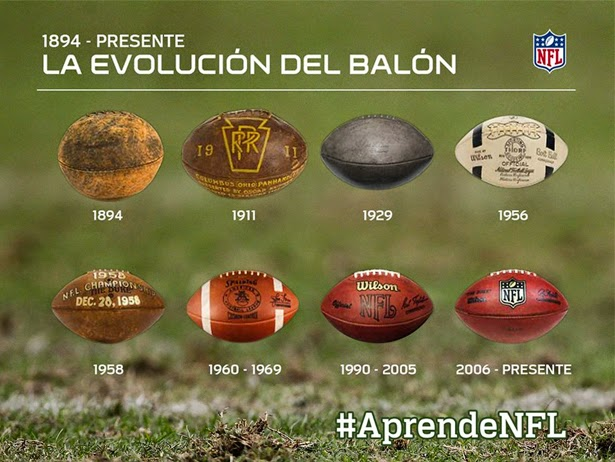

A dinâmica do futebol americano é conquistar território e seu principal objetivo é simples: chegar o maior número de vezes na endzone do adversário. Quanto mais vezes o time conseguir fazer isso, mais pontos ele terá. Pra isso, ter uma boa estratégia é fundamental.
O campo de futebol americano tem 120 jardas de comprimento por 53,5 jardas. Para o nosso sistema em metros, a medida fica 109,7 metros de comprimento por 48,92 metros de largura, já que 1 jarda é igual 0,9144 metros.

Cada jarda é marcada no campo, uma a uma. As jardas com numeração igual a múltiplos de 5 são marcadas com a linha inteira e as com múltiplos de 10 numeradas no gramado. São duas endzones, área no fim das duas pontas do campo, uma para cada time, com dimensões de 10 por 53,5 jardas, além das duas traves em forma de “Y”.
O jogo é dividido em 4 quartos de 15 minutos cada. Mas existem algumas situações na partida em que o tempo é parado, como:
Sempre que o passe do quarterback não é completado ou acontecem pontuações;
Quando o jogador sai de campo com a posse de bola, até o árbitro reposicionar a bola;
Two-Minute Warning: dois minutos finais do 2º quarto e nos cinco minutos finais do 4º quarto, até a nova saída da bola.
A bola usada nos Estados Unidos e Canadá são geralmente feitas de couro bovino. As bolas usadas em ligas juvenis são feitas de borracha ou plástico. Desde 1941, a empresa Horween tem sido a produtora exclusiva das bolas da liga profissional National Football League. A bola é da cor amarronzada e tem superfície enrugada, para facilitar a pegada e evitar deslizes. Nas pontas da bola, ela são pintadas para facilitar a visão noturna do recebedor.
CAPACETE: é de uso obrigatório. Com grade, que deve ser nos modelos tolerados, tradicionais – não podem ser aquelas grades muito fechadas. A função primordial é proteger toda a cabeça e o rosto. Ele tem uma proteção interna que ajuda a absorver impacto, a grade protege qualquer dano ao rosto.
1920
Esta iteração do capacete da NFL foi o estilo do couro macio. Foi definitivamente a edição mais magra antes da liga viu a importância de proteger as cabeças dos jogadores.